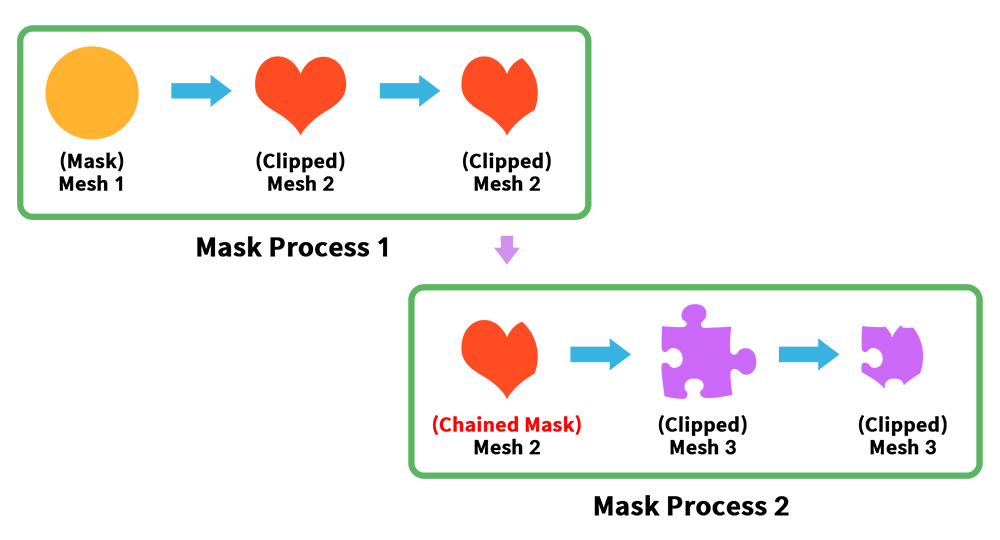
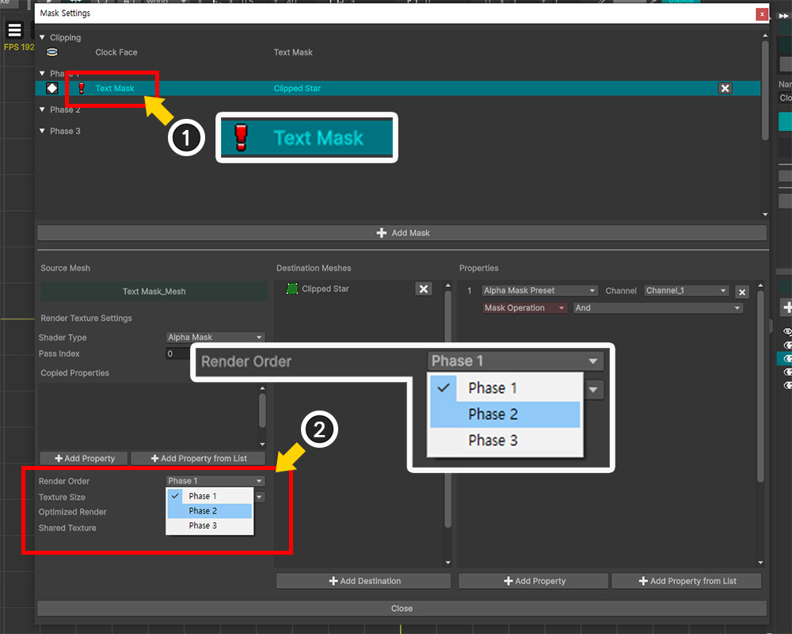
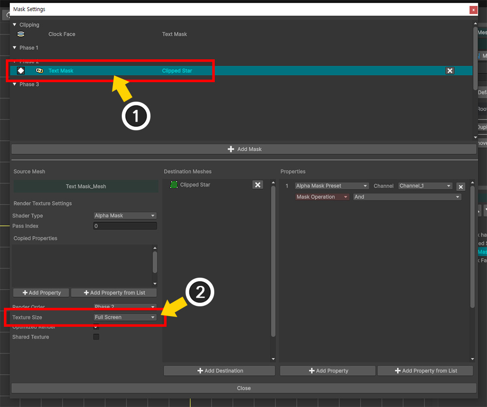
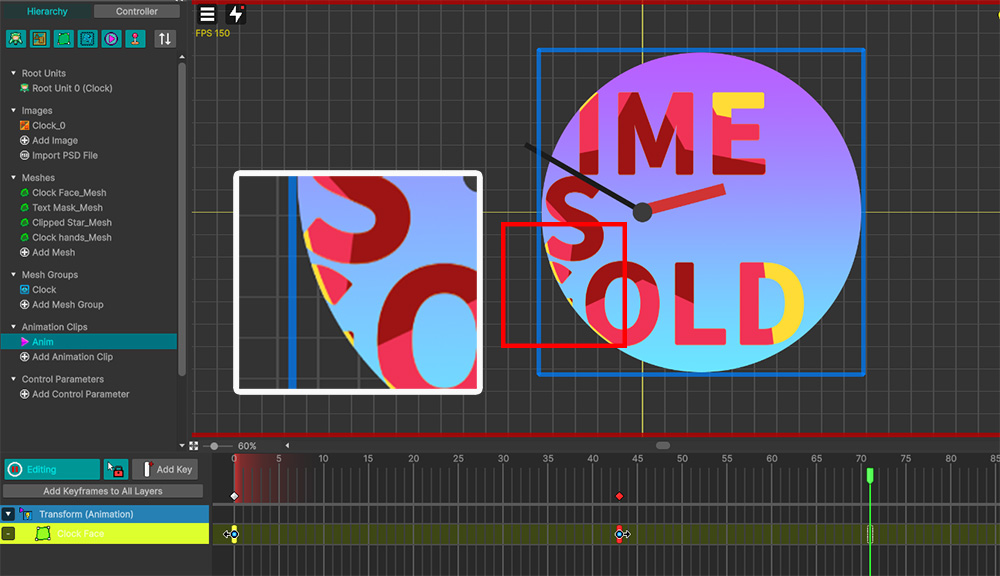

AnyPortrait > マニュアル > マスクチェーン
マスクチェーン
1.6.0

クリッピングレンダリングが必要な場合の中で、クリッピングレンダリングを連続して行う必要がある場合もあります。
つまり、このページで扱うのは、「クリッピングされたメッシュ」が別のメッシュへの「マスクメッシュ」になる場合です。
上の画像から見ると、「Mesh 1」がマスクメッシュとして「Mesh 2」をクリッピングし、クリッピングされた「Mesh 2」がマスクとして「Mesh 3」をクリッピングしています。
マスク処理が連続して行われるこれを「AnyPortrait」では「マスクチェーン（Mask Chain）」と呼ぶ。
このページでは、「マスクチェーン」が必要な理由と「マスクレンダリングの順序」について説明します。

クリッピングマスクが連続的に適用される場合を再現するために、上記の例を用意しました。
上記の例は、「星型の模様を含むテキストが描かれた時計」です。
まず、時計板メッシュ（「Clock Face」）をマスクにして、テキストメッシュ（「Text Mask」）をクリッピングします。
その後、クリッピングされたテキストメッシュ（「Text Mask」）がマスクされ、星型メッシュ（「Clipped Star」）をクリッピングします。

これをどのように実装するかしばらく考えてみると、既存の「クリッピングマスク」を利用すればきれいな時計が実装になりそうです。
「クリッピングマスク」を使って製作をすると、どのように見えるか試してみましょう。
(1) 「Text Mask」メッシュを選択します。
(2) 「クリッピングマスク」ボタンを押して「Clock Face」メッシュからクリッピングするようにします。

(1) 次に「Clipped Star」メッシュを選択します。
(2) 「クリッピングマスク」ボタンを押して連続クリッピングになるように設定します。
(3) 完成した結果を見ると、「Clipped Star」メッシュがテキストではなく時計板全体にクリッピングされることがわかります。
意図したのは「星柄のあるテキストが時計板に描かれたもの」でしたが、この方法では正しく実装されません。
この場合、「マスクチェーン」が必要です。

(1) 「Clipped Star」メッシュの「クリッピングマスク」を解除し、「Text Mask」メッシュのみ「Clock Face」メッシュへのクリッピングになるように設定します。
(2) 「Open Mask Settings」ボタンを押します。

(1) 「Clock Face」メッシュの「クリッピングマスクデータ」が登録されていることがわかります。
(2) 「Add Mask」ボタンを押します。
(3) 2番目のマスクとなる「Text Mask」メッシュを選択します。
(4) 「Select」ボタンを押します。

(1) 「Add Destination」ボタンを押します。
(2) 「Clipped Star」メッシュを選択します。
(3) 「Select」ボタンを押します。

(1) 「Add Property」ボタンを押します。
(2) 「Alpha Mask Preset」タイプのプロパティが追加されました。

これで「Clock Face > Text Mask > Clipped Star」につながる連続したマスクデータが完成しました。
この状態が「マスクチェーン」であり、「Text Mask」メッシュは「チェーンされたマスク」になります。
(1) ところで「Text Mask」メッシュのマスクデータ項目に「警告アイコン」が登場しました。
この「警告アイコン」は、「マスクチェーン」が発生するが正常に動作しない可能性があることを意味する。
「マスクチェーン」で考慮すべき最も重要なのは、「マスクがレンダリングされる順序」です。
この例では、通常のケースは、「Clock Face> Text Mask> Clipped Star」の順にマスクを作成して渡すことです。
ただし、順序が間違って「Text Mask> Clipped Star」が最初に実行され、「Clock Face> Text Mask」が後で実行されると、クリッピングエラーが発生する可能性があります。
(2) これを解決するために「マスクデータ」を選択し、「Render Order」の値を「Phase 2」に変更します。

(1) リストから「マスクデータ」が「Phase 2」に移動し、警告アイコンが「チェーン」アイコンに変わったことがわかります。

「マスク設定ダイアログ」を閉じてレンダリング結果を確認しましょう。
意図したとおりにレンダリングされ、きれいな時計が完成したことがわかります。

Unityシーンでテストすると、レンダリングは正常になりますが、マスクの品質が低いことがわかります。
これは、「マスクチェーン」が発生した場合、クリッピングマスクの「レンダリングテクスチャ品質の最適化」機能は機能しません。 （関連ページ）
これは、レンダリングテクスチャからレンダリングテクスチャへのレンダリングが発生するため、「品質の最適化」プロセスで必要な「画面座標系」が一定ではないためです。

この場合、マスク品質を向上させるためには、「マスクチェーン」に関連する全ての「マスクデータ」のレンダリングテクスチャ解像度を調整する必要がある。
(1) 「マスク設定ダイアログ」を開き、「マスクチェーン」の先頭に対応する「Clock Face」の「クリッピングマスク」項目を選択します。
(2) 「Texture Size」の値を適度に大きい値に設定します。

(1) 次に、「Text Mask」メッシュの「マスクデータ」を選択します。
(2) 同様に、「Texture Size」の値を適度に大きい値として選択します。
ここでは「Optimized Render」がチェックされていますが、「マスクチェーン」が発生した「マスクデータ」ではそのオプションは無視されます。

Unityシーンに戻ると、マスクの品質が良くなったことがわかります。
マスクの処理手順
「マスクデータ」は「コマンドバッファ」によって実行され、「レンダリングテクスチャ」でレンダリングを実行します。
「コマンドバッファが実行される順序」は、まもなく「マスクデータが実行される順序」でもあります。

マスクが処理される時点、すなわちコマンドバッファが実行される時点は、レンダリング手順の特定のイベントに合わせて区別される。
AnyPortraitのメッシュは「Transparent」シェーダーとしてレンダリングされるため、以前のレンダーイベント「Before Forward Opaque」、「After Forward Opaque」、「Before Forward Alpha」のいずれかでマスクが処理されます。
「フェーズ（Phase）」オプションは、この3つのレンダーイベントを指します。
同じ「フェーズ」内では、コマンドバッファの実行順序が意味をなさないため、「マスクチェーン」のレンダリング順序エラーが発生する可能性があります。
そのため、レンダリング順序エラーを解決するためには「フェイズ」を明確に指定する必要があるのです。
従来の「クリッピングマスク」は、「マスクデータ」の「フェーズ 1（Phase 1）」と同じ時点である「Before Forward Opaque」で実行されます。
したがって、「クリッピングマスク」との「マスクチェーン」が発生した場合は、少なくとも「フェーズ 2（Phase 2）」で実行するように設定する必要があります。
ただし、上記の仕様は「Built-Inレンダリングパイプライン」に対応し、「URP」では「Before Rendering」イベントに統合されます。
このとき、内部でマスク処理の順序が「フェーズ」単位で毎回ソートされます。
結果は同じです。
マスクが更新されるのとレンダリングテクスチャでレンダリングされるのは内部的に異なる動作です。
マスクが更新されるのはモディファイアおよびアニメーションの更新ロジックに関連し、レンダリングテクスチャでレンダリングされ、マスクデータが送信されることはレンダリングイベントに関連します。
そのため、マスクに関する問題が発生した場合、「更新」による問題と「レンダリング」による問題は区別されなければなりません。
このページで扱う問題は「レンダリング」に関する問題です。
他のスクリプトとの更新順序による問題は、次のマニュアルで取り上げています。
- 他のアセットとの実行順序の問題
マスクチェーンの順序が正しくない場合

「マスクチェーン」の「Render Order」の値が適切ではないとしても、意外にもレンダリング結果はかなりまともに見えるかもしれません。
レンダリングは毎フレームごとに行われるため、「前フレームでのレンダーテクスチャ」が反映されてレンダリングエラーが見えにくいです。
しかし、レンダリングエラーは明らかに存在し、これはメッシュが登場する瞬間やメッシュが速く動くアニメーションで見つけることができます。
共有テクスチャでレンダリング順序が一致しない場合

「共有テクスチャ（Shared Texture）」（関連ページ）で、各マスクデータの「Render Order」が一致しない場合、何が起こるかを見てみましょう。
(1) 4つのマスクメッシュがある例です。

(1) 4つのメッシュのそれぞれに「マスクデータ」があります。
(2) この「マスクデータ」の「Shared Texture」オプションが有効になり、同じ「共有テクスチャ」をターゲットにマスクをレンダリングします。

(1) ところで、この「マスクデータ」の一部の「Render Order」が他の「マスクデータ」と一致しない場合、上記のように「警告アイコン」が発生します。
「共有テクスチャ」は同じ「フェイズ」でマスクを一括生成する必要があります。
(2) 問題を解決するために、「マスクデータ」のいずれかを選択して「Render Order」を設定します。
(3) 「Sync Shared Texture Options」ボタンを押します。
(4) 同期メッセージが表示されたら、「Sync All Options」ボタンを押すか、「Sync Except Shader」ボタンを押して、「共有テクスチャ」のすべての「マスクデータ」のオプションを一致させます。